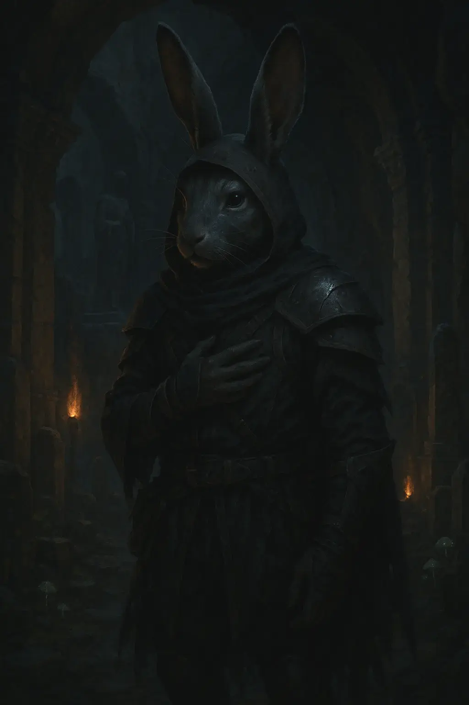

Adepten

Die Adepten sind die gewöhnlichen Mitglieder des Kults, die die täglichen Aufgaben des Kults ausführen und dessen Botschaft verbreiten. Die Adepten sind vielseitig und entscheidend für den Erfolg des Kults, da sie die Grundlage bilden, auf der die Macht des Kultführers und der Hohen Priester ruht.
Alltag und Lebensweise
Die Adepten leben in gemeinschaftlichen Schlafsälen und nutzen die Trainingsräume, um ihre magischen Fähigkeiten und ihre Kampfkunst zu verbessern. Ihr Alltag ist geprägt von Ritualen, Training und der Verbreitung der Lehre des Kults. Trotz der harten Bedingungen sind die Adepten durch ihren Glauben und die Hoffnung auf eine bessere Zukunft motiviert. Auch der mögliche Aufstieg zu einem Hohen Priester motiviert die Adepten täglich zu trainieren.
Rituale und Aktivitäten
Blutrituale: Adepten opfern regelmäßig einen Teil ihres eigenen Blutes bei den Vollmondritualen, um die Herstellung und Aufladung magischer Artefakte zu unterstützen. Dieses Opfer symbolisiert ihre Hingabe und ihren Beitrag zur Macht des Kults.
Initiationsritus: Neue Mitglieder durchlaufen einen strengen Initiationsritus, bei dem sie wertvolle Artefakte, Gold oder uralte Schriftrollen opfern müssen. Dieser Akt zeigt ihre Bereitschaft, alles für die Ziele des Kults zu geben.
Rekrutierung: Die Adepten spielen eine Schlüsselrolle bei der Rekrutierung neuer Mitglieder. Sie verbreiten die Lehren des Kults und suchen aktiv nach neuen Anhängern in allen Bevölkerungsschichten von Eosphoros Jenseits.
Propaganda: Durch Predigten, Flugschriften und andere Mittel verbreiten die Adepten die Botschaft der neuen Ordnung. Sie nutzen jede Gelegenheit, um Zweifel an der alten Ordnung zu säen und die Vision des neuen Gottes zu verkünden.
Sabotage: Die Adepten sind auch in Sabotageaktionen gegen die Kirche der Ordnung und andere rivalisierende Gruppen involviert. Sie stören deren Aktivitäten, um die Vorherrschaft der Erben der neuen Welt zu sichern.
Opfergaben: Die Adepten sammeln Sünder, Verräter und Anhänger der Kirche der Ordnung als Opfergaben für die Rituale. Diese Opferungen stärken die Macht des Kults.
Besondere Adepten
Julius (Harengon): Mit diesem Adepten stehen die hohen Priester und der Kultführer am meisten im Austausch. Er ist sozusagen der Leiter der Adepten und gibt die Befehle der Führenden weiter. Unter den Adepten ist er der begabteste in Sachen Magie und erfüllt seine Aufträge stets zur Zufriedenheit des Kults. Für spezielle und wichtige Aufträge kommt immer er in Frage.
Magnus (Kenku): Er ist der Späher und Spion des Kults, er sammelt Informationen über mögliche Angriffe, interessante Objekte und generell alles was von interesse sein könnte.
Janus: Er ist der Verwalter der Kultstätte, er kümmert sich um Nahrung und die Organisation des Lagers.
Rasmus & Amadeus: Sie bewachen im Tandem den Haupteingang zur Kultstätte.
Severus (Tabaxi) & Augustus (Tabaxi): Sie sind Brüder und meist außerhalb der Stätte im Kampf oder auf der Suche nach Schätzen.
Maximus: Maximus ist der Kampfmeister und Hauptausbilder der Adepten in Kampfkunst und Waffenführung. Er organisiert regelmäßige Trainingssessions und sorgt dafür, dass die Adepten immer kampfbereit sind. Seine Strenge und Disziplin haben ihm großen Respekt eingebracht.
Justus: Justus ist der Schreiber und Archivar des Kults. Er dokumentiert alle Rituale, verfasst die Lehren des Kults und sorgt dafür, dass das Wissen des Kults nicht verloren geht. Seine Schriften werden für die Rekrutierung neuer Mitglieder und zur Propaganda verwendet.
Darius: Sucht täglich in Orderly nach neuen potenziellen Verbündeten und verbreitet unaufdringlich die Propaganda des Kults.
(Notiz: Falls keine Rasse beschrieben wurde, ist die Person ein Mensch)